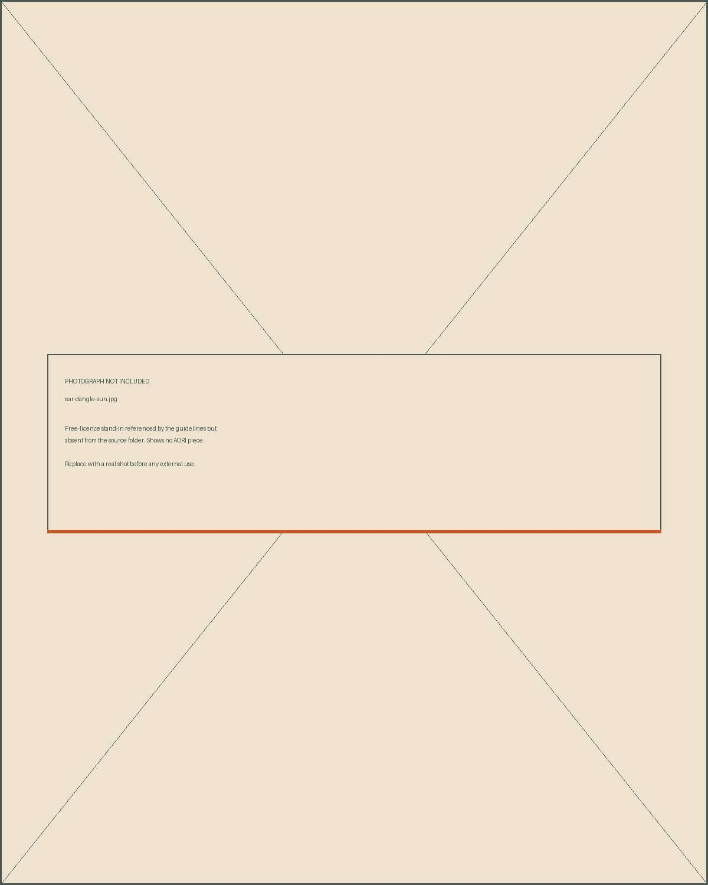

Free-licence photographs saved into assets/photography/. They are stand-ins: none of them shows an AORI piece. Their job is to hold the six crops on brand book page 18 and to put a photograph where a photograph belongs on the applied pages, instead of a painting.
Pexels licence — free commercial use, no attribution required; credits are in credits.json anyway. Every description below is written from looking at the file. Four candidates were fetched and then deleted for being off-brand: two layered-chain and gemstone-still-life shots, an ornate bridal hand, and a pair of gemstone rings on leather.
Marked with a green edge
The six I would keep. Two are held in reserve: hand-thin-rings has coloured stones and ear-dangle-sun is a dangling earring in hard sun — neither is what AORI makes, but both are usable if the range widens.
01
The six
Between them these cover wrist, hand, ear, neck and the bench. All five wearing shots are plain silver or oxidised silver, one piece at a time, in soft indirect light — the rules on page 18 were written from this kind of picture.
hand-ring-bracelet
Dark-skinned hand, a plain silver band and a textured bracelet, rust-red knit sleeve, blurred plaid behind. Soft even light. The closest thing here to the brand's own picture.
wrist-cuff
A textured silver cuff on a wrist against a rust knit sleeve. The sleeve is almost exactly the palette's terracotta, which makes this the strongest of the eight.
ear-hoop
A textured silver hoop in an ear, tight profile, near-black ground. The hoop is the signature piece, so this crop carries more weight than the rest.
neck-pendant
A fine chain and one small silver pendant at the neck, dark hair falling across the frame, soft light. One piece, nothing styled.
bench-hands
Two hands at a bench, a hammer mid-work, tools scattered, warm low light. This is the shot the story needs and the account does not have.
hand-stack
A hand wearing one dark oxidised textured band, resting on a near-black surface beside a black-and-white photograph. Darker and more still than the others.
02
Held in reserve
Both break a rule the brand currently keeps. Neither is deleted, because a rule can change.
hand-thin-rings
Pale hand, three thin stacking rings — one set with a red stone, one with a pale stone. Soft light, dark blurred ground. Good picture; AORI does not set stones.

ear-dangle-sun
A face in direct sun against blue sky, freckles, a long dangling earring. Warm and alive, but hard sun is against the light rule and the earring is ornate.
03
Photographs are not treated like paintings
Paintings get a toned mount and an unpainted margin. Photographs go full-bleed to their box with no border, because a border on a photograph reads as a frame and the brand does not frame things. Same square crop either way, same corner radius of zero.
Photograph — full bleed, no borderPainting — toned mount, margin
Where each goes
PhotographProduct tiles, product hero, size and fit, the bench, Instagram posts of pieces.PaintingCollection headers, place and story, section grounds, the brand book, packaging.NeverA painting standing in for a product shot on a shop page. A photograph standing in for a collection header.
04
What is still missing
The flat lay on cloth. Page 18 names six crops and this is the one nothing here covers — a piece on crumpled linen, shot from above. Every free candidate I found was on leather, velvet or a display stand, all of which the rules forbid. It stays an open slot.
These are stand-ins wherever they appear until you send AORI's own photographs. The six on your account are already the right register; page 18 was written from them.
Say the word and I will wire the six into the applied pages, the product fact sheet and the Instagram templates in one pass.